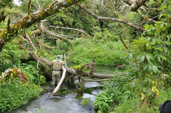
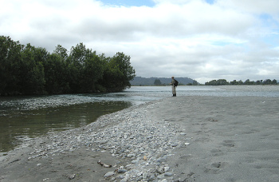
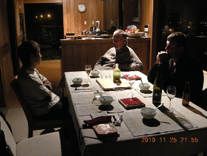

釣行日誌 ＮＺ編 「翡翠、黄金、そして銀塊」
難しい場所
2010/11/25(THU)-5
一行は、さらに上流へと進んでいく。今度はディーン君が、左利きの僕に釣りやすいように、川の左岸側を遡行してくれている。と、彼の足が止まった。視線の先にはとんでもない藪が広がっている。そのポイントは、川が二股になっており、中央には大木が横たわっている。あそこでは、たとえ鱒をかけたとしても、取り込みができなくてパニックになるのがオチである。しかし、ディーン君の指示は、
「行って釣ってこい」
であるので、行かないわけにはいかない。

岸の草むらにリュックサックを置き、身軽になってからしずしずと流れの中に足を踏み入れ、ディーン君の説明したポイントまで歩み寄る。大木の影に隠れながら眼を凝らすと、居た。これも大きい。後ろの枝を気にしながら、そぉっとニンフを落とすと、水中の魚影は一目散に沈木の影へと走り去ってしまった。
「ああ～！ ダメだったよぉ！」
「ハハハ！ 残念残念！」
最初から少し腰が引けていたので、それほど残念ではなかったが、あんなポイントも見逃さずにチェックするディーン君のプロ根性に感心した。
もうしばらく行くと、渓相があまり良くなくなってきたので、ディーン君のアイデアで、そのスプリングクリークが本川と合流しているポイントを狙うこととなった。一行はどんどんと今来た岸辺を歩いて下り、牛たちが静かに草を食んでいる牧場を通り抜け、砂地の大きな河原が広がっている本川との合流点にやって来た。ここまで来るのに30分以上は歩いただろう。ディーン君の早足に付いて行くのに必死である。合流点では、幾分曇り空であったが風は無く、水面は鏡のように静かであり、遠くから人の姿が鱒の眼に入るため、大回りして目的のポイントに近づいた。

スプリングクリークの岸辺には灌木が生い茂っており、その影にはいかにも大物が潜んで居そうな淀みが続いている。鰐部さんが眼を凝らして近づいていくが、どうやら魚影は無いらしい。浅い水域を下から順に探っていくが、ディーン君の歩みは止まらない。魚が居ないのだ。と、スプリングクリークが本来の川幅になる辺りで、行く手の水中を大きな影が横切った。鱒を驚かせてしまったのだ。ディーン君は苦笑して、こんなこともあるさと笑った。
再び作戦会議が開かれ、近くにある別のスプリングクリークへ足を伸ばすことになった。いやぁ、今日はもう十分歩いたから....と言いたいのをぐっとこらえ、二人に付いて行く。まるで、砂の惑星と言いたくなるような茫漠とした砂の河原を歩く。砂に足が埋まり、ただでさえ疲れているのによけい体力を使う。
浅瀬を渡るところで足元に30cmぐらいのヒラメが川底に横たわっているのが眼に入った。
『へぇ～！ こんな所にまでヒラメが遡上して来ているんだ！』
と感心してしまった。海からどのくらい距離があるのか分からないが、西海岸は本当に自然が豊かだなぁと思った。
牧場の柵をまたぎ、牛止めの高圧電線をまたぎ、川を渡り、草地を抜け、歩いて歩いてようやくもう一本のスプリングクリークへ着いた。さぁ！と意気込んで鱒を探したものの、魚影は無く、あえなく敗退となった。今日は本当によく歩いた。
ブリントさん宅に着くと、時刻は夜９時を回っている。奥さんのグレースさんが、真心のこもったディナーを用意してくれて、五人は楽しくテーブルを囲んだ。

ワインのボトルも開けられ、メインディッシュのカウワイ（鯖に似た青魚）に一同は舌鼓を打ち、豪華な食卓を楽しんだ。カレー屋のテイクアウトも美味しかったが、今夜は夢のようなディナーであった。食後には、グレースさんがナプキンを使ってウサギちゃんの小話を披露してくれてとっても面白かった。
長かった三日目が、ようやく終わり、僕と鰐部さんはコテッジに戻ってぐっすりと眠った。
釣行日誌ＮＺ編 目次へ
サイトマップ
ホームへ
お問い合わせ